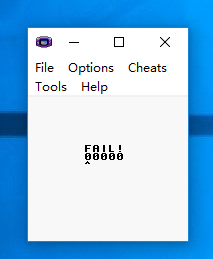
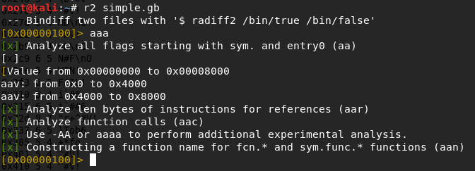
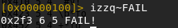
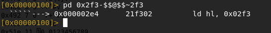
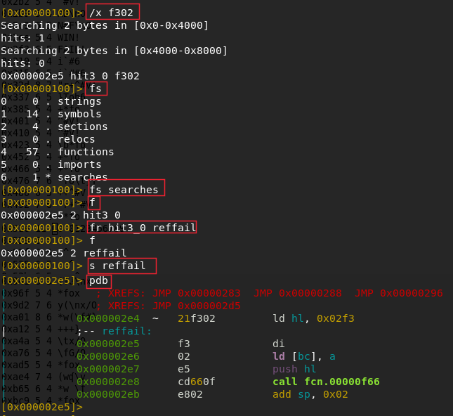
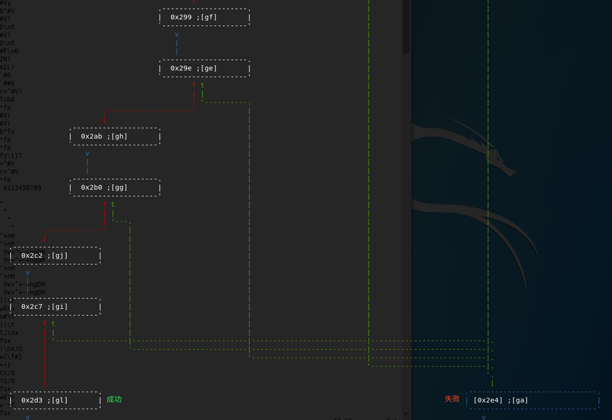
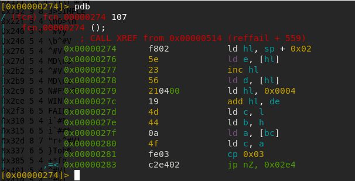
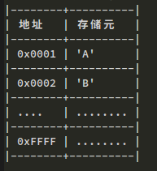
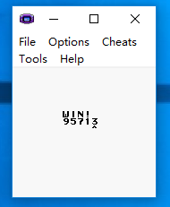

我一直倾向于命令行模式的工具,因为它们简洁高效,不用拖动鼠标点来点去, 逆向工具也是如此,比较有名的命令行模式的逆向工具 GDB 便是其中之一, 但是由于种种原因,也没怎么用过(主要是不怎么会用...),曾经耐着性子用, 但是也不得要领,总感觉太强大以至于无法驾驭.这是迟迟没拿 GDB 当做主要调试工具的原因之一, 也许以后会用的,事实上,我相信会有这么一天的.
但是今天的主角不是 GDB,而是 radare2,经过一段时间的使用,我逐渐喜欢上了这款开源的调试工具. 它的主要战场是命令行,绝对跨平台(Windows/Linux/MacOS/Android/iOS)调试器.简单的说一下该工具, Radare2(也称之为 r2) 是一个完整的逆向框架,由一组工具组成,内置反汇编器, 支持各种格式的可执行文件以及操作系统.
radare2 由 C 语言编写,在 2006 年由 pancake 创建, 在 2009 年作者开始从头开始重写 radare 代码,自此 radare 开始发展起来,吸引了许多开发者参与进来. 2016 年,第一届 r2con 在 Barcelona 成功举行,第二届 r2con 在刚刚过去的 2017 年 9 月份也顺利举行.
由于也是刚接触 radare2 ,一些基础的操作是需要熟悉的, 根据 2017 r2con 会议上给出的一个 challenge 为例(Gameboy ROM), 对其逆向,熟悉 radare2 的相关操作.
本文相关附件可以从 这里下载.
Ubuntu 16.04 x64 LTS Host + Kali Linux 2.0(VMBox) + Windows 10 (VMBox) + Radare2(git clone version)
Windows 10 虚拟机主要是为了安装 Gameboy 模拟器,Kali 上自带有 Radare2, 但是我还是编译了一个最新版本的用.
git clone https://github.com/radare/radare2.git /opt/radare2
sudo /opt/radare2/sys/install.sh如果要更新,也是这个命令.
make uninstall make purge
tar zcvf radare2.tar.gz /opt/radare2
Radare2安装完成后会有几个二进制文件如下:
我们首先应该查看该固件的信息,输入 i 然后回车我们看到如下信息:
[0x00000100]> i blksz 0x0 block 0x100 fd 3 file SIMPLE format ningb iorw false mode -r-x size 0x8000 humansz 32K type Gameboy-Rom card ROM arch gb binsz 32768 bits 16 canary false crypto false endian little havecode true linenum false lsyms false machine Gameboy nx false os any pic false relocs false static true stripped false va true几个重要的信息我已经标志出来了.可以知道是 Gameboy 的 ROM 固件,小端序列, 架构为 gb.然后上网找到它的模拟器,我用的为这一款: VisualBoyAdvance-1.8.0-beta3-624 ,下载后解压就可以使用了,打开 simple.gb,界面如下所示: 
看到字符串 FAIL!,我们用 r2 打开程序:
r2 simple.gb
并对该固件进行分析,如下图所示:
寻找字符串 FAIL!,使用如下命令:
izzq~FAIL
i表示信息,使用 i? 可以得到可用的命令列表,zz表示全局字符串搜索(即在整个二进制文件中搜索), q表示安静模式输出,你可以试一下去掉q来看看输出什么.~类似于 grep 的功能.
输出一共四列,依次为字符串地址,字符串字节数,字符串长度,字符串值. 所以我们可以知 FAIL! 的地址为 0x2f3,这里无法使用 axt 功能来找到对 0x2f3 的引用, 原因不得而知.因此采用了下面的方法来搜索:
pd 表示打印操作码,$$ 表示当前地址(也就是 0x100),@表示绝对地址定位.
代码的意思是,从当前地址开始,打印 0x2f3 - $$ 个操作码,并过滤出含有 2f3 的反汇编代码行, 引用地址为 0x2e4,然后我们定位到该地址: s 0x2e4, 然后执行 pdf 命令来打印当前所在函数的反汇编代码,
当然还有其他搜索方法,这里再说一种,进一步熟悉 radare2 操作. 我们可以使用 / 来启动一个搜索,我们知道该 ROM 为小端序, 引用 FAIL 字符串的代码必然会使用 0x2f3 这个地址,也就是说一定会用到十六进制序列; f3 02,那么我们使用 /x f302来搜索,结果如下:
/x 的搜索输出中我们看到它搜索两个 Sections(查看 Sections 可以使用 iS 命令), 在第一个 section 中找到了十六进制序列,显示 f302 的地址为 0x2e5. 这真是 FAIL 字符串被调用的地址.
搜索结果被存在标志空间中,查看标志空间的命令是 fs, 然后我们选择 searches 搜索空间,这可以通过 fs searches来完成, 查看选择的标志空间中存储项可以通过命令 f 来完成,通常地, 为了方便识别标志,我们可以对标志重命名,重命名命令是 fr, 然后我们就可以通过 s 命令快速定位到标志地址, 最后我们用 pdb 命令(打印一个基本块)来显示改地址所在的基本块.
总之,现在我们能够定位到引用目标字符串的位置了, 我们使用 pdf 或 pdr命令来反汇编当前所在的函数,这两者的区别在于, 后者是以递归的方式反汇编当前所在函数.我们使用 pdr 反汇编当前函数, radare2 正确的识别出了函数的边界,我们可以先通过 VV 进入函数调用图看一下:
如图上所看到的, 5 条绿色的线均指向失败基本块,而这 5 条线正好就是 5 个数字的判断分支. 所以这样就好分析了,分析每一个目标基本块即可,那些是目标基本块?当然是绿线连接的了. 另外说一下, radare2 中给每一个基本块设置了快捷标签,如上图中的 [gh],[gg] 等, 如果我想到 [gh] 基本块,直接按下 gh 即可.
现在我们定位到第一个目标基本块,快捷键可以通过 gb 达到, 然后我们按下qq 回到 radare2 的 shell(radare2 会自动定位到我们在函数调用图中选定的基本块首地址), 输入 pdb 反汇编选择的基本块,如下所示:
这是第一个判断基本块,它的基本逻辑分析如下:
由 0x274 处的指令可以看出, gb 的地址为 2 字节, 由 0x276 处的指令可以看出, gb 每一个存储元所占的空间为 1 字节. 一个简单的示意图如下所示:
GB 传递参数的方式也是压栈传参,所以 sp + 0x02 是第一个参数的地址, 所以下面这段代码取得第一二个存储元的内容(一个 16 bit 整型的低位和高位), 存在 de 中,也就是 de = [hl]:[hl+1] = parg
| 0x00000274 f802 ld hl, sp + 0x02 ; 0x2e4 | 0x00000276 5e ld e, [hl] | 0x00000277 23 inc hl | 0x00000278 56 ld d, [hl]
然后 hl = 0x0004:
| 0x00000279 210400 ld hl, 0x0004
然后加到一起: hl += de ⇒ hl = parg + 0x0004
| 0x0000027c 19 add hl, de
下面的代码则把 [hl] 中的内容放入 a 中,也就是 a = [parg + 0x4] = parg[4]
| 0x0000027d 4d ld c, l | 0x0000027e 44 ld b, h | 0x0000027f 0a ld a, [bc] | 0x00000280 4f ld c, a
首先与 0x3 进行比较, cmp(parg[4],0x3)
| 0x00000281 fe03 cp 0x03
如果相等则判断下一个,否则直接报错退出. 也就是说第一个比较的是 parg[4] 是否与 0x3 相等. 类似的,cmp(parg[2],0x7),cmp(parg[1],0x5),cmp(parg[3],0x1),cmp(parg[0],0x9). 综合以上,有:
cmp(parg[0],0x9) cmp(parg[1],0x5) cmp(parg[2],0x7) cmp(parg[3],0x1) cmp(parg[4],0x3)
所以输入的通过秘钥应该是 95713,如下图所示:
